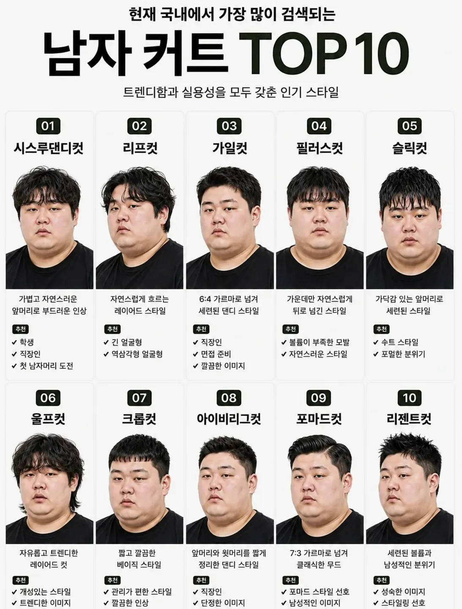

56 · 13 · 1 시간 전 · 원문

수집 당시 댓글 13개
대충살어좀 · 1 시간 전
투블럭 어디감?
제발요 · 1 시간 전
이마 가리니까 하관통이 마인부우 돼버리네
판타레이 · 1 시간 전
ㅜㅜ
던킨제로자두 · 1 시간 전
마운자로 컷 급구
글봇 · 1 시간 전
리젠트가 좋다
필부잔적 · 1 시간 전
나도 이거 저장했음 3번으로 해주세요 8번으로 해주세요 할라고
랑군 · 1 시간 전
작성자님은 그냥 숏컷이나 하세요
일간알림수집중 · 1 시간 전
가일컷이 낫네
고민중독 · 1 시간 전
입구컷
졸렬 · 1 시간 전
쉽지않네
카오 · 1 시간 전
확실히 뚱뚱하면 올리는 게 났다고 생각함
디아라한 · 1 시간 전
귀찮으니 투블럭
오이짠지 · 58 분 전
포마드해야겠다
투블럭 어디감?